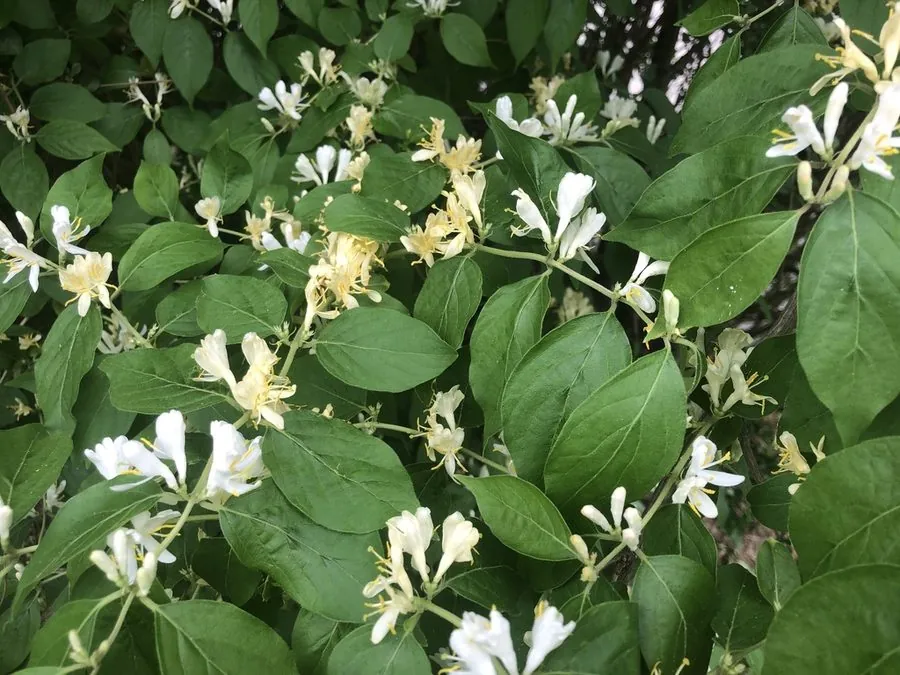

灌木与花木 · 植物界
金银忍冬 Lonicera maackii

忍冬科忍冬属落叶灌木，花初开白色后转黄色，秋日红果满枝，是北方常见的观花观果灌木与蜜源植物。
- 分类
- 门被子植物门纲木兰纲目川续断目科忍冬科属忍冬属
- 栖息环境
- 林缘、溪边与灌丛，喜光耐半阴、耐寒耐旱
- 地理分布
- 中国东北、华北、华东、华中及西北东部；朝鲜、日本、俄罗斯远东
- 保护级别
- 暂无评估；未被列入国家重点保护野生植物名录
物种志
金银忍冬为忍冬科忍冬属落叶灌木，高可达两至三米，树皮灰褐色，小枝中空。叶片对生，卵状椭圆形至卵状披针形，全缘，表面深绿，背面淡绿。花成对生于叶腋，花冠二唇形，初开时白色，后渐变为黄色，花期五至六月，具香气；浆果球形，成熟时鲜红色，果期九至十月。
金银忍冬分布于中国东北、华北、华东、华中及西北东部，朝鲜、日本、俄罗斯远东也有，多生于林缘、溪边和灌丛中。它喜光也耐半阴，耐寒、耐旱，对土壤要求不严。花白黄相间、香气清雅，秋季红果晶莹，是北方园林中观花观果兼用的灌木；花是优良的蜜源，果实可提取色素，茎皮纤维可制绳。金银忍冬与金银花同属，但花较小、果为红浆果。
形态与习性
- 株高2–3 m，小枝中空
- 花期5–6 月，花白转黄
- 果期9–10 月，浆果鲜红
- 光照喜光，也耐半阴
- 水分耐旱，喜湿润而不积水
- 土壤适应性强，各类壤土
- 主要用途观花观果灌木，蜜源植物
趣味知识
- 金银忍冬的花初开洁白，两三天后转为金黄，同一枝上白黄相间。
- 它的红果经冬不落，是北方冬季鸟类的重要食物。
- 金银忍冬与中药金银花同属，但花香较淡，药用多以金银花为主。